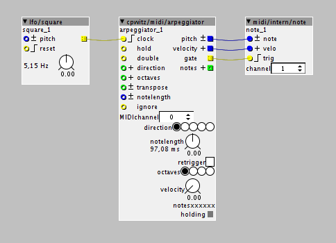

@cpwitz
Peter, like your work on the web-midi stuff, but for me to use it with my setup, I will need Hortontal faders, in fact will be looking to fit 32 of them in.
I have tried to understand your files after downloading them from github, there seems to be plenty of content to create them, just not sure how to go about creating a Horizontal Fader.. ?
Any sources or info you may have to push me in the right direction will be great.
Cpwitz Contributions
Gavin
#62
cpwitz
#63
Hey Gavin,
take a look at the github repo. I updated it with a really quick and very dirty horizontal fader hack. The xx-tempate.html shows the usage (style class "fader-horz")..
Please tell me, if that works for you.
Cheers,
Peter
Gavin
#64
Excelent, thanks,
Looks good, a little bit of tweeking I was able to get the label from the left side to the right side. This is how I need it for my setup.
Next tweek will be to move the value to where the left side label was, at value 127 it is awkward trying tyo grab the slider.
Great work.. thanks heaps..
Ott
#65
Is there a way to make the arpeggiator continue outputting notes after the gate has dropped? It sounds a bit weird having your arp immediately stop on the last note when you let go of a chord with long release times.
cpwitz
#66
The "hold" inlet is meant to hold all incoming notes as long as it is high (you could attach a ctrl/toggle to it). And also the MIDI sustain pedal cc (64, I think) holds all notes as long as it is >0. Or did I get you wrong?
Ott
#67
Well, my main issue is that when I let all the notes go, and my envelope has a high release, it just stops. The hold inlet probably wouldn't help, as that would also keep triggering the gate outlet that my envelope uses. It does sound hard to implement though, because you'd need to know if a note was intentionally let go of, since the notes of a chord won't all be released at the same instant if you're playing live.
Ideal behavior:
Hold down some notes > They arpeggiate. Gate is high.
Let go of one note > That note is dropped from the arpeggiation. Gate is high.
Let go of all notes (with imperceptible time differences) > They continue to arpeggiate. Gate is low.
Hold some notes again > Just the new notes arpeggiate. Gate is high.
I might be asking for too much here, but any help is appreciated.
cpwitz
#68
Hey Ott,
This sounds to me like a very "special" use case, that I consider hard to implement in a sort-of generic arpeggiator object. Maybe you could accomplish something like that patch-wise with a midi/in/keyb object, its gate outlet, an inverter and a pulselength factory object, which prolonges the "hold" inlet of the arpeggiator for a given time. But I confess, I haven't thought this entirely through, sorry.
Androoclops
#69
Is there a version of this with an arpeggiator? Ive seen an appegiator patch somewhere once in the community Library but I wasn't able to figure out how to use it/add it to this patch (assuming it wouldn't overload the Axoloti...)
cpwitz
#70
The simplest way to add my arpeggiator to any patch, that plays MIDI notes, is this:

Add these three objects anywhere to the patch and set the MIDI channel of the arpeggiator to the channel for incoming notes, which should be arpeggiated (e.g. from your keyboard) and the channel of the "midi/intern/note" object to the channel the patch is set to receives notes.
If you want to sync the arpeggio to incoming MIDI clock signals, you can trigger the arpeggiator clock with the output of a factory "midi/in/clock" object and maybe some appropriate clock division counter to get half, quarter, eighth or sixteenth notes...
The usage of the arpeggiator object should be quite self-explanatory, but here's the doc.
Hope that helps!
noizelab
#72
Hey @cpwitz,
I love the grainmill and just built a stompbox to use it with guitar.
The only thing that would make it even more perfect is tap tempo. I'd like to replace MIDI Sync with it.
I already found a tap tempo solution, I just can't remember the author.
Would it be possible to use this instead of MIDI Sync with grainmill?
I'm sorry if this is a dumb question, I'm just starting out with axoloti.
{kind=link}
cpwitz
#73
Glad you like it!
Sure, you can replace the "clock-source" object in the grain-mill patch with anything, that provides clock pulses. Just make sure, that both yellow wires (to counter_1/trig and demux_2/i) are connected to your new clock output.
I don't know the patch you took the screenshot from (looks like some proof of concept or test scenario). But there's a tap tempo source by @DrJustice : http://community.axoloti.com/t/drjustice-contributions/1459/37
Captain_Burek
#75
Hi Cpwitz,
I've been playing with you webmidi interface, it's great! Do you have any idea whether and how it is possible to get the midi from an old iPad or Kindle Fire or other cheap tablet to the mini-USB port of the axoloti. If i could use a pad instead of a computer, that would make for a great live solution...
cpwitz
#76
Thanks for using and liking it!
Mobile usage is a bit of a problem. iOS devices (Safari mobile) do not support Web MIDI. Newer Android devices do, but you'll need a USB-OTG cable and a MIDI interface. I really didn't quite follow this path. Maybe you'll be better served by something like TouchOSC with a pretty and a pretty customisable touch screen interface. Haven't tried this for quite a while.
austingreen
#77
I use an app called Midi Designer to make customized templates for my axoloti patches and program/control them from my ipad. It's kinda laborious especially some of my patches has over 200 cc's spread over 2-3 channels. One could easily recreate these 3 interface in one evening, might not look as cool or have any old school vibe but will function just the same. You can also make them with Lemur app which looks cooler but i haven't learned how to make them with lemur (think it might have a steeper learnign curve to make templates, once i learned MD i just kept with it, lemur is a better app though with much more funtionality midi-wise with lots of great community templates.) I also like using animoog to play some of my patches with the virtual buchla-esque tongs, like my patch based on the Lyra-8. Or ThumbJam app is another that has good note pads with x-y midi output.
NamedUser
#78
I am a brand new Axoloti owner. I love experimental and ambient music, like Tim Hecker (and many others). I fired up my Axoloti for the first time, insalled Gran Mill, and I am blown away. This is a beautiful granular implementation, and I thank and salute you. I will definitely be using this live. I have an Axocontrol on the way, and am looking forward to that pairing.
I specifically got the Axoloti to add granular and other effects options to my Octatrack / modular gear, and 30 minutes in I am very excited about he possibilities.
NamedUser
#79
Am playing with this some more today - am running the sync out of my OT Mk2 into the Axo, into Grain Mill, then back into an OT channel. It's working flawlessly.
However - I can't get midi sync to work. I am running a clock from the OT Mk2 midi out port by midi cable into the Midi in of the Axo, and the Axo is not responding. Any thoughts welcome! (PS the Axo is responding to midi - I can control the pitch of Axo synths).
I guess I need to somehow test whether a clock is being receied by the Axo - but how?
NamedUser
#80
Ok - edit - this is recieving the Ableton midi clock fine - so the issue is at the Octatrack end, or a compatibility issue 
NamedUser
#81
And edit - now working with OT clock - must not have had the midi jack physically connected properly.